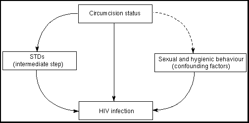

Recent publications have reported an association between the lack of male circumcision and sexual transmission of HIV [1-7]. If confirmed, such an association may prompt interest in a possible intervention through male circumcision.
It has been suggested that following circumcision, the surface epithelium of the glans develops a protective keratin layer, a form of natural condom [8]. Thus, circumcision could reduce the HIV incidence by directly decreasing the susceptibility of uninfected men to HIV. Circumcision could also reduce the incidence of HIV by directly decreasing the infectivity of men with HIV, as suggested by the studies of tissue samples collected from macaques infected with the simian immunodeficiency virus (SIV), which showed infected mononuclear cells in the dermis and epidermis of the penile foreskin [9].
Furthermore, some or all sexually transmitted diseases (STD) may increase men's susceptibility to HIV [10,11]. If circumcision reduces the transmission of genital infections, either by improving local hygiene [12] or by accelerating the healing of otherwise subpreputial lesions [13-15], circumcision may also delay HIV transmission. Therefore, potential associations between the lack of circumcision and STD other than HIV are also of interest.
In the past, circumcision has been advocated for many reasons: for religious purposes among the Jews and Muslims; for cultural reasons among several African ethnic groups; for reasons of hygiene in the United States, Canada, and Australia and for therapeutic purposes---as the cure for phimosis. consequently, circumcision is almost universal in some parts of the world (United States and Muslim countries) and rare in others (Europe and South America). In all situations, cultural differences between circumcised and uncircumcised men may affect their sexual and hygienic behaviour, including their exposure to various STD and HIV.
In this article we review the evidence in support of the association between the lack of circumcision and STD, including HIV infection, and the possible biological explanations. we discuss implications for public-health interventions and suggest areas and methods for further research.
Twenty-three published study reports linking circumcision status to HIV infection were identified. The literature review included articles using circumcision as a key word, articles analysing risk factors for HIV infection and AIDS conference proceedings. Unfortunately, one-third of these studies were reported in abstracts with little detail. Four different study designs were used in these studies as described below.
A number of reports of the association between HIV serostatus and the lack of circumcision were initially provided by retrospective studies. Most of these studies were not specifically designed to test a hypothesis about circumcision.
Six partner studies [3, 16-20] recruited heterosexual partners
of HIV-infected patients to look for an association between the
serostatus and circumcision status of the male partner. A significant
association was observed in three of the studies [3,16,17]
(Table 1).
However, the results were reported in abstracts with few
methodological details.
| Study source [reference] | Sample size | Crude OR (95% CI) | Statistical significance |
|---|---|---|---|
| Guimaraes et al. [18] Brazil, 1991 | 109 | 0.4 (0.1-1.1) | NS |
| Fischl et al. [16] USA, 1988 | 92 | 9.6 -- | P=0.04 |
| Moss et al. [19] Kenya, 1991 | 70 | 2.1 (0.7-6.3) | NS |
| Allen et al. [20] Rwanda, 1991 | 1458 | 1.1* (0.8-1.4) | NS |
| Hunter et al. [17] Kenya, 1990 | 623 | 3.7 (1.5-9.0) | P<0.05 |
| Hellmann et al. [3] Uganda, 1991 | 42 | 5.4 (1.1-2.7) | P<0.05 |
Differentiation between infectivity and susceptibility was possible in only one study [18], which examined 109 female partners of HIV-infected men in Brazil. No association was observed between the lack of circumcision and male infectivity (Table 2). Four[4,6,21,22] reported significant associations between the lack of circumcision and an increased susceptibility to HIV infection in men (Table 2). Of these, only one was reported in a full paper [4], which analysed data from 338 STD patients (11.2% infected with HIV) believed to have acquired their STD [genital ulcer disease (GUD) or urethritis] from a group of prostitutes known to have a high prevalence of STD. After adjustments for regular contacts with prostitutes and travels to neighbouring countries, uncircumcised men were at a higher risk of HIV infection only if they did not report a history of previous genital ulceration. Among those with a history of genital ulceration, no effect of circumcision on HIV status was observed.
In another study where a marginal association was observed in univariate analysis [23], only 20 men out of 610 were circumcised, which may have led to the test's poor ability to derive a statistical association (i.e. lack of statistical power) (Table 2). Similarly, Greenblatt et al. [24] studied the risk of HIV infection among 115 men with GUD, an odds ratio (OR) of 3.3 was observed for uncircumcised men in univariate analysis (Table 2). After adjustment for age, number of partners, contacts with prostitutes, ethnic origin and birth place, the authors reported a loss of statistical significance without further details. However, it is not possible to know if this was due to an appropriate adjustment on true confounding factors or to a lack of statistical power because many variables were included in the model.
Five out of the above six studies [4,6,22-24] suggesting a protective role of circumcision were conducted in African countries and one in the United States [21]. An additional six studies by three different teams working in Rwanda [25,26], Uganda [27] and the United States [28,29] found no relationship between male circumcision and HIV status.
| Study source [reference] (sample size) | Population | OR (95% CI) Univariate Analysis | Adjustments |
|---|---|---|---|
| Simonsen et al. [4] Kenya, 1988 (n=388) | Clients of prostitutes History of urethritis History of GUD | 7.5 (2.2-27.2)* 0.8 (0.3-2.5)* | Contacts with prostitutes, travel 5.2 (1.6-8.8) 0.45* |
| Cameron et al. [5] Kenya, 1989 (n=293) | Follow-up of clients of prostitutes | 10.2 (4.5-23.0) | Genital ulcers, regular prostitute contact 8.2 (3.0-23.0) |
| Tyndall et al. [6] Kenya, 1991 (n=718) | Clients of prostitutes with GUD or urethritis | 5.0 (3.2-7.9)* | ND |
| Hellmann et al. [22] Uganda, 1991 (n=1977) | Men with STD | 1.7 (1.3-2.0) | ND |
| Hira et al. [23] Zambia, 1990 (n=610) | STD clinic | 2.4 (0.9-6.6)* | ND |
| Greenblatt et al. [24] Kenya, 1988 (n=115) | Men with GUD | 3.6 (1.2-11.2)* | Age, no. of partners, ethnic origin OR becomes NS (**) |
| van de Perre et al. [25] Rwanda, 1987 (n=302) | All male workers in a factory | 0.9 (0.3-2.6) | ND |
| Carael et al. [26] Rwanda, 1988 (n=274) | Husbands in HIV serologically concordant couples | 1.1 (0.6-2.0)* | ND |
| Hudson et al. [27] Uganda, 1988 (n=132) | Hospital ward | NS | ND |
| Whittington et al. [21] USA, 1989 (n=167) | STD clinic heterosexual clients | 8.4 (1.4-50.1) | ND |
| Surick et al. [28] USA, 1989 (n=352) | STD clinic | NS | Age, race, homosexuality, drug use, number of partners NS |
| Surick et al. [28] USA, 1989 (n=1374) | STD clinic | NS | Age, race, homosexuality, drug use, number of partners NS |
| Chiasson et al. [29] USA, 1991 (n=1389) | STD clinic (drug users and homosexuals excluded) | 1.7 (0.9-3.4)* | ND |
The Muslim religion was used as a surrogate marker for male circumcision in two surveys performed in Uganda and Côte d'Ivoire [30,31]. In the first survey 4.5% (6 out of 133) of the Muslim men were HIV-infected compared with 9.2% (153 out of 1663) from other religious groups; while the difference was less important among women (10.6% versus 12.6%). In the second survey `no relation between the HIV-seroprevalence rates of Moslems who practised circumcision and non-Moslems who are not circumcised were observed'. None of these studies obtained individual foreskin status, nor attempted to adjust for known risk factors for HIV.
First, the proportion of circumcised men was higher among the 77 men lost to follow-up than among the 293 included in the analysis, and selection bias may have occurred in this study [32]. Furthermore, 2 weeks of follow-up after the sexual exposure was considered an adequate follow-up. Since the median seroconversion time is usually assumed to be approximately 2 months, it is possible that a substantial proportion of seroconversions was missed. If the proportion of missed seroconversion was different among circumcised and uncircumcised men, further bias may have been introduced.
Second, all documented seroconversions were attributed to an exposure to the same group of prostitutes, including those occurring more than 6 months after sexual contact with the prostitute. However, seroconversions are very rare (<5%) after 6 months [33]. At the 3-month follow-up, only those uncircumcised men who had a reported concomitant GUD were at increased risk of acquiring HIV. The interaction between circumcision status and reported presence or absence of genital ulcer disease was not taken into account in the multivariate analysis (estimating an adjusted OR when the OR in two different strata of a third variable are significantly different may be invalid).
Third, only 25% of the men reported a single contact with a prostitute during the study, among whom only six seroconversions occurred. The statistical significance of the test (comparison of the seroconversion rates between circumcised and uncircumcised men) would disappear with the addition of a single seroconversion among circumcised men.
These limitations, plus the fact that, to date, no other longitudinal study has replicated similar results, call for serious caution in the generalization of the results.
Two authors [1,2] reported a correlation between estimated geographical frequencies in the lack of circumcision and estimated HIV prevalence in Africa. In discussing the limitations of such correlations, the authors emphasized that the high prevalence of HIV infection in a given area may be due to the early introduction of the virus into the area, and not necessarily to the relative rarity of male circumcision. Ecological correlations do not allow other factors, such as sexual behaviour, presence of other STD and other risks for HIV, to be taken into account. Moreover, indices of HIV prevalence are very crude, as well as data on circumcision which were based on anthropological studies written between 1930 and 1950.
Only five studies [34-38] were specifically designed to assess the association between selected STD and the lack of circumcision among men attending STD clinics (Table 3). Only one [35] provided age-adjusted OR, while four reported crude measurements of risk. Three other authors reported results from studies not specifically designed to quantify the association between the lack of circumcision and men's susceptibility to sexually transmitted infections [21,39,40]. Fortunately, available data on the circumcision status of men and infections/inflammatory penile lesions were analysed. As illustrated in Table 3, the magnitude of the association between different STD and lack of circumcision, when present, is highly variable.
GUD, mainly chancroid, were associated with the lack of circumcision in three studies of patients from an STD clinic on Nairobi, Kenya [4,5,41]. In two studies data involving patients reporting for other STD as a control group allow the calculation of relative risks of 1.8 [confidence interval (CI), 1.2-2.6] for past history of GUD [4], and 1.6 (CI, 1.30-2.0) for present diagnosis of GUD [5]. Other authors reported that they found less circumcised men among patients with GUD than expected, given the frequency of circumcision in the local population [42,43].
| Study Design | ||||||||||
|---|---|---|---|---|---|---|---|---|---|---|
| Cross-sectional studies in men attending STD clinics
designed to study this association | Dermatology clinic Cross-sectional | STD clinic Retrospective serological data | Crew members of a naval vessel | |||||||
| Study [reference] (sample size) | Taylor [34]* UK, 1975 (643) | Parker [35]* Australia, 1983 (1319) | Davidson [36]* UK, 1977 (135) | Smith [37] USA, 1987 (6078) | Rodin [38]* UK, 1976 (175) | Fakijan [39] USA, 1990 (398) | Whittington[21] USA, 1989 (167) | Hooper [40] USA, 1978 (537) | ||
| Comparison group | No STD** | No herpes | No STD** | No yeast (culture) | Yeast (culture), No symptoms | No STD** | No yeast (culture) | No balano- posthitis | (not defined) | No STD** |
| OR (95% CI) | ||||||||||
| Gonorrhea | 1.0 (0.4-2.1) | NA | 2.3 (1.54-3.5) | NA | NA | 1.1 (0.9-1.4) | NA | NA | NA | (***) |
| NGU | 0.7 (0.3-1.3) | NA | 1.1 (0.8-1.4) | NA | NA | 0.6 (0.5-0.7) | NA | NA | NA | NA |
| Yeasts | 3.6 (0.7-24.5) | NA | 5.0 (3.1-8.3) | 1.3 (0.5-3.8) (culture) | 24.0 (1.6-800) (symptoms) | NA | 1.4 (0.5-4.2) (culture) | 2.3(****) (1.0-4.2) | NA | NA |
| Herpes | 1.7 (0.8-3.6) | 2.5 (1.5-4.1) | 2.7 (1.7-4.2) | NA | NA | NA | NA | NA | 1.4 (1.0-2.0) | NA |
| Warts | NA | NA | 1.5 (0.9-2.4) | NA | NA | NA | NA | NA | NA | NA |
| Chlamydiae | NA | NA | 1.1 (0.7-1.7) | NA | NA | NA | NA | NA | NA | NA |
| Syphilis | NA | NA | 5.4 (1.4-21.1) | NA | NA | NA | NA | NA | 2.8 (1.1-7.2) | NA |
Interpreting the evidence requires a distinction between susceptibility and infectivity. Only one partner study [18] allowed the analysis of a potential association between the infectivity of HIV-infected men and the lack of circumcision (Table 1). In the other partner studies, the distinction between infective and susceptible men was not performed. If the lack of circumcision increased male susceptibility or infectivity but not both, mixing data on male-to-female and female-to-male transmission would lead to dilution bias because of the lack of specificity in the recorded cases of transmission (whatever the direction), whereas only cases of female-to-male transmission (for the study of male susceptibility) or only cases of male-to-female transmission (for the study of male infectivity) are of interest.
Studies of STD other than HIV were performed on men only. In these studies, positive associations have always been related to an increased susceptibility to STD for uncircumcised men. However, for some STD such as herpes, infection might have occurred a long time before data collection. The study of men's susceptibility ideally requires the inclusion of new infections only.
On the other hand, the portal of entry for pathogens and the type of clinical presentation vary according to the STD under study. The former may influence the mechanisms of sexual transmission and the potential role of circumcision. It is unclear what the portal of entry is for HIV, but for pathogens responsible for GUD and balanitis the portal of entry and the location of symptoms is the external epithelium of the penis (shaft, glans and foreskin). An attempt should be made to distinguish two different potential mechanisms of association between GUD and/or balanitis and the lack of circumcision: differential recovery from genital symptoms or differential susceptibility to infection.
The main limitation to interpreting most results is the poor assessment of sexual behaviour and other potential confounders, such as hygienic practices between circumcised and uncircumcised men. Circumcision in Africa, where the majority of the studies on risk factors for HIV infection have been conducted, is highly related to religious and ethnic characteristics. It is possible that ethnic groups performing ritual circumcision have different sexual behaviours from those who do not, and therefore, different risks of being infected with HIV, due to factors other than circumcision status. An attempt to adjust for potential confounding factors related to sexual behaviour was made in only four studies searching for risk factors for HIV infection [4,5,17,24]. In such circumstances, alternative explanations for observed associations between circumcision status and HIV infection can hardly be excluded.
The comparison groups (men without STD under study) should be exposed to STD agents in a similar manner as the group with STD to infer any causal association. This was attempted only in the Kenyan studies [4,5], where cases and non-cases were exposed to the same group of prostitutes with high HIV infection rate.
Most of the studies, conducted among STD clinic attenders, assumed that circumcised and uncircumcised men used these health facilities in the same way, but socioeconomic and cultural factors may differ between the two groups. It is possible that circumcised men seek care in circumstances different from uncircumcised men; for example, in cases of severe genital symptoms such as GUD, for any minor symptom, or for an `at risk' sexual contact even without symptoms. Of circumcised men are overrepresented among patients with minor symptoms (who often serve as controls), the association between the lack of circumcision and STD would be overestimated if not spuriously generated.
In many studies, men's circumcision status was assessed by physical examination. In a few studies, assessment of circumcision status was not specified or relied on self-report. Only two authors studied the reliability of self-reports. Among 1304 Australian men [35], 98.% gave an accurate report of their circumcision status, whereas in the United States [28], 17.7% of uncircumcised men and 8.4% of circumcised men misclassified themselves. The potential effects of differential and non-differential misclassification on epidemiological associations have been illustrated elsewhere [44].
Researchers whose studies show `no effect' either do not submit their results, or find it difficult to get published [45]. Such a bias is not confined to an examination of circumcision and HIV status, but cannot be excluded since the present article relies on published reports.
In summary, lack of distinction between susceptibility and infectivity, inadequate control for confounding variables, potential selection bias and misclassification of exposure, inappropriate choice of a comparison group, and publication bias may lead to under- or overestimation of the association. It is difficult to predict the net effect of these sources of bias. Furthermore, the magnitude of the association, when present, varies strongly between studies and its crude measure is overestimated in some reports by the use of OR instead of RR. The results of observational studies conducted to date, therefore, require cautions interpretation, and one has to find the middle ground between faith and evidence.
Assuming that there is an association between circumcision and HIV transmission, the magnitude of the benefit should be balanced with the expected medical complications, the acceptability and the cost of the medical intervention before any public-health decision can be reached. A wide range of decisions are possible ranging from maintaining the practice wherever it already exists to advocating wide-spread mass circumcision.
Male circumcision is not without medical side-effects; with regard to newborn circumcision, septic complications may occur in poor hygienic settings, although to our knowledge no systematic data has been collected. Complications are likely to be even more problematic in adolescent and adult circumcision, possibly causing pain, haemorrhage, and healing problems. Thus, adult and, in some settings, newborn circumcision may generate more harm than benefit. The onus is therefore to produce adequate evidence of safety before a supposedly protective intervention is implemented [46].
For the reasons discussed above, the quantification of a potential benefit, if any, that could be expected from male circumcision vis à vis HIV transmission, is highly problematic. The lack of consistency between results, the limitations of studies reported to date, the critical time lag between large-scale implementation of circumcision and any measurable effect, and more decisively, the lack of a coherent model for the facilitation of HIV transmission in uncircumcised men make attempts to calculate attributable risks in different populations rather inaccurate.
Besides potential benefits to be obtained and the safety of a public-health intervention, it is important not only to examine its acceptability and feasibility, but also to compare these characteristics with those of alternative interventions. The acceptability of a new surgical intervention on the male reproductive tract is likely to be problematic in settings where the religious and sociocultural context usually outweighs public-health considerations. Behavioural changes, at least as important as those required for the adoption of condoms, and a general shift in social norms will clearly be required to introduce male circumcision as a new general practice. Furthermore, operational requirements needed to introduce neonatal, adolescent or adult circumcision are likely to be considerable. In many cases, such undertaking will require mass communication programmes for public education, training of overburdened health-care personnel, and supplies necessary for the surgical procedure.
Given limited public-health resources, the ratio of benefits and costs and the range of culturally acceptable alternative interventions, such as condom promotion for the control of HIV and STD, have to be considered in each setting.
In addition to differentiating susceptibility from infectivity, and assessing a potential indirect mechanism through which lack of circumcision could enhance HIV transmission via increased rates or duration of STD, it is necessary to consider potential confounding factors. Clearly, an association between circumcision status and HIV infection may result, in whole or in part, from their mutual dependence on patterns of sexual activity or, for instance, on hygienic behaviours. To our knowledge no systematic data have been collected on the latter in order to establish possible differences between circumcised and uncircumcised men. However, anecdotal evidence suggest that such differences may exist in some cultural contexts, as indicated in a recent study of urban men in Rwanda [47].
 Figure 1 illustrates some of the possible mechanisms through which the lack of circumcision could operate for the facilitation of HIV transmission. Based on our present knowledge, research priorities might focus on a better understanding of the biological mechanisms through which the lack of circumcision could enhance STD and HIV transmission. Animal and primate research could assist in this endeavour. Studies of the association between circumcision status and sexual and hygienic behaviours in different populations, using both quantitative and qualitative methods, should highlight the strength of potential confounding effects.
Among the sexually acquired diseases that need further study of their potential association with circumcision, priority should be given to GUD for several rasons. First, previous studies provide more arguments for an association between the lack of circumcision and GUD than between the lack of circumcision and urethritis. Second, a potential association between the lack of circumcision and duration of genital symptoms might be stronger for GUD than for urethritis. Third, one of the mechanisms through which a potential association between the lack of circumcision and HIV infection could operate is a suspected association between GUD and HIV infection. The assessment of an indirect effect requires the assessment of the two underlying direct effects (lack of circumcision --> GUD, and GUD --> HIV). Simultaneously obtaining both assessments within the same study would probably be difficult. Fourth, GUD are more common than HIV infection in some parts of the world. recruitment of cases may therefore be easier to determine for GUD than for HIV infection.
Most of the published reports of epidemiological studies rely on data retrospectively recorded from STD clinic attenders. Seeking medical care may be related to sociocultural variables and severity of symptoms, both of which may be related to circumcision. In particular, the sociocultural and behavioural background of men without STD in these settings might be different from those with a STD. Other male population groups, such as employees in a factory, would be interesting to study. As STD prevalence in these populations may be low, large study samples may be needed to allow the identification of risk factors for STD acquisition.
Case-control studies allow a more careful choice of controls than cross-sectional studies. Controls should be chosen as individuals without STD but who are exposed to STD as are the cases. Cases and controls should have similar sexual behaviours during the investigated period, including the number and type of partners, condom use and frequency of sexual contacts. The recruitment of male partners of women diagnosed with the STD under study may help to control that men with and without the STD were exposed to the pathogen.
Longitudinal studies imply the prospective followup of circumcised and uncircumcised men who were equally exposed to STD/HIV, and a complete recording of each STD/HIV occurrence. Results of such studies are reliable only if the follow-up is achievable for almost all individuals included.
Intervention studies would imply mass circumcision in well-defined male populations, and the evaluation of the potential benefits for these populations (and their partners) in terms of avoided infections. Following newborn circumcision, the important time-lag between implementation and its measurable impact (if any) will complicate the conduct of such studies. If a causal link exists, adolescent and adult circumcisions may delay the spread of HIV infection more immediately than newborn circumcision. However, for the reasons discussed above, it is suggested that such studies be discouraged.
The potential public-health benefits of male circumcision have been greatly discussed in the past 50 years, often in a passionate and emotional manner. However, relatively few studies have been carried out and those that have, present conflicting results. The major criticism of most of the studies preformed to date is the lack of attention given to potential confounding factors, which could be related to both circumcision status and risk of sexually transmitted infections, such as sexual behaviour or differences in hygienic practices, or differential use of specific health facilities. As Poland [48] noted, "We must remember that circumcision is not performed randomly."
Therefore, further efforts are still required to quantify the relative risk associated with the lack of male circumcision. Some of this can be achieved by using observational designs which better address the limitations discussed above. Laboratory and primate research might also continue to provide useful information.
As the safety, expected benefits, feasibility and acceptability of mass circumcision are all questionable, neither public-health interventions nor intervention studies appear to be defensible options before there is stronger evidence from observational studies in different settings that show lack of male circumcision may be a genuinely independent risk factor for the transmission of HIV.